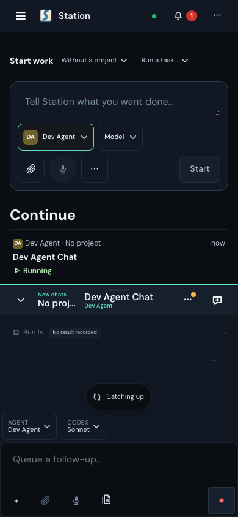
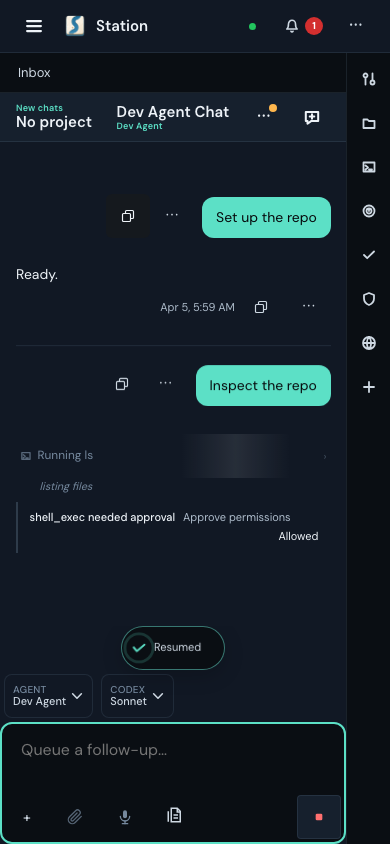
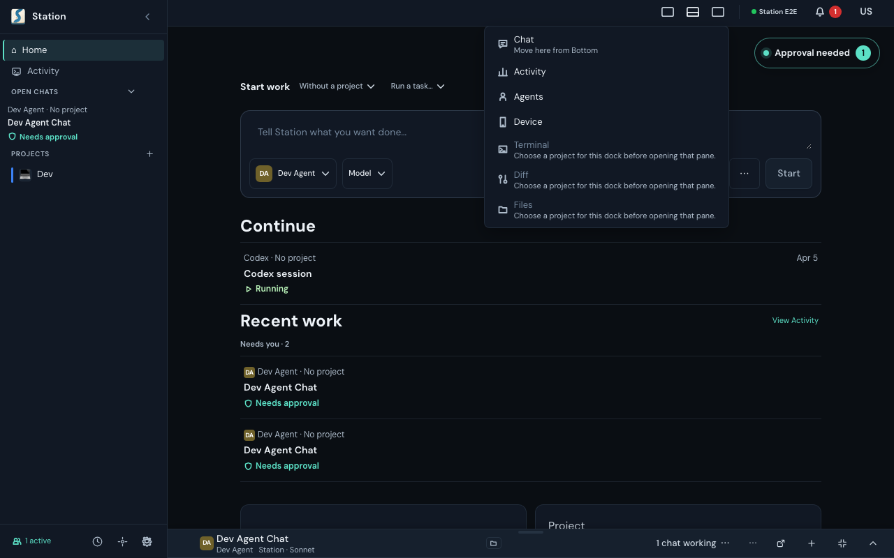
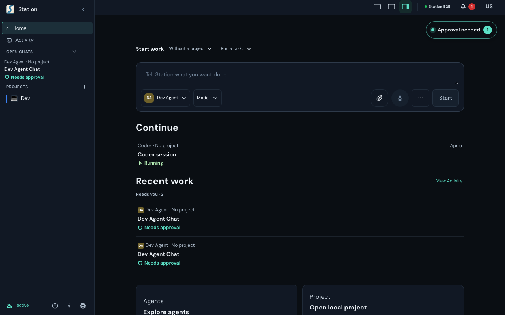

Fixed two workflow bugs. Clean browser smoke:37/37. Approval handlers:45/45. Local ci:fast passed at34a74ca.
The old action sent you to Home and lost keyboard context. It now keeps the visible conversation and returns Tab to its composer, including newly created chats.


An invisible approval wrapper covered the Chat menu item. Only the visible approval controls now intercept pointer events.


Before images restore the old owners deliberately. Both corresponding tests fail; restoring the fixes passes. The new-chat identity check independently fails3cases when removed.
Browser fixtures; no new provider or physical-device proof. Gallery review and Codex recovery #3713 remain open. Exact capture and test provenance.